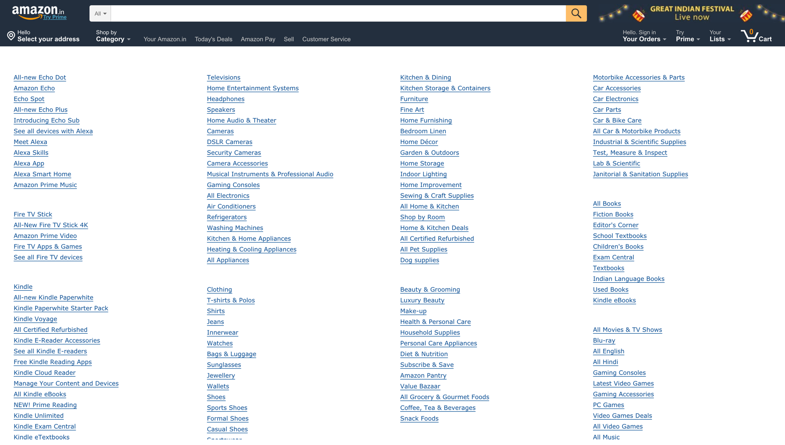

Hick's law describes the time it takes for a person to make a decision as a result of the possible choices he or she has: increasing the number of choices will increase the decision time.
[Wikipedia]
Given n equally probable choices, the average reaction time T required to choose among the choices is approximately:
\(T = a + b*log_2(n+1)\)
where coefficients \(a\) and \(b\) depend on context conditions, including the way the choices are presented and the user’s degree of familiarity with the subject.
Wait, what ?
To get a better sense of how Hick's law works, let's go through a simple activity. Let's assume you are designing NASA's new spaceship and it can be any color you like. However, you can only select one color from a randomly generated set of colors that NASA gives you. In this activity we will see how the time taken to choose a color increases as we increase the pool of colors to choose from.
Let's Begin!
Step 1: Let's decide the number of colors to choose from (start at a large number like 8 colors)
Step 2: See the black boxes below? They will show the random colors and a timer will start once you hit SHOW ME COLORS.
Just click on your favorite color from the given set of random colors after hitting the button.
Step 3:
Time taken to select color:
Current average time for these number of choices is:
Step 4: Go back to Step 2 and complete the trial a few more times to get a better representation of your reaction time.
Step 5: Scroll below to see your results (if you want) and then go back to Step 1 and change the number of color options. On the very minimum do this for a small number of choice (for example, 3 choices) and a large number of choices (say 8, choices).
Results
The scatter plot below shows your trials which each dot representing the color you selected and the time you took. The red line is generated using regression and it predicts how your time. You can always go back and complete more trials to see how your result changes.
However, there are a few caveats..
Most probably your time went up as the number of choices increased, however, if it did not, there could be multiple reasons as to why it did not:
The distance of START button to the colors to select is variable and a major factor which can make your results look different.
Our eyes are good at spotting differences and finding patterns. This might pull your vision towards certain colors and you might not actually go through the entire list of colors, thus, it wouldn't matter how many options there were to begin with.
But how does this apply to UX?
Hick's law is often cited to justify menu design decisions. If menus are really long, it will take a lot of time for the user to find something, as the number of choices are large.
For example, in the Amazon Menu shown below try to find Exam Central.
(Note: Menu has been edited for this exercise).

Did you find it?
If not, don't worry. It is really hard to find anything in such a menu. (BTW it's in the second group in last column)
This is why menus aren't designed like this. Following an extension of Hick's law, if there is a categorization of data, the taken to find items increases are the options increase but it does in a sub-linear manner.
To demonstrate the point, look at the menu below and try to find the same word, Exam Central.
Anything is easier to find in this menu because of better categorization and information scent. If you were searching for say Televisions, you know they would either be in the category of TV, Appliances and Electronics. Compared to the first menu, you would have had to manually scan the list for all items. In this case you need to scan the list but a smaller list (list of categories).
Linear vs Sublinear Time
To see how categorization of data affects the time taken to make a choice, let's go through another activity.
In this activity let us assume that you have to pick a shade of RED from the randomly generated colors. However, this time the colors will be categorized.
Let's say one category is RED and the other category is not RED. The categorization could be done in any way but since you are only interested in the RED color, it wouldn't matter to you.
Step 1: Let's decide the number of colors to choose from (start at a large number like 8 colors)
Step 2: The red colors will always be in the starting of the list. Select your favorite shade of red!
Step 3:
Time taken to select color:
Current average time for these number of choices is:
The graph plots your average time for different number of choices and ideally this would be below the regression line which we generated from Plot 1. This represents the fact that time taken was less and hence, shows that it becomes easier to make choices if the data is categorized, similar to the second example of menu design.